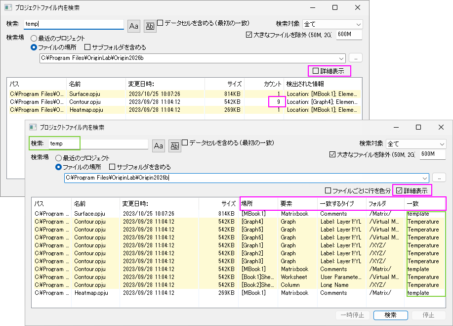

Origin には、プロジェクトファイル（.opju, .opj）の中身（シート名、ノート、メタデータなど）を検索できるプロジェクトファイル内を検索ツールがあります。
プロジェクトファイル内を検索ダイアログを開くには
または
または
または、
または
または
または、
検索ボックスでは ワイルドカード（* と ?） を利用できます。
このボタンを使用して、検索で大文字と小文字を区別するかどうかを指定します。
 単語全体で一致させるかどうかを指定します。
単語全体で一致させるかどうかを指定します。
列の下のほうにあるセルの値を検索するかどうかを指定します。検索対象に合致する複数のセルがあっても、この設定が有効な場合には出力結果には1つの情報しか表示しません。
検索範囲を、全て/ファイル名/ ブック(セルノートを含む)/グラフ/メモ/フォルダ名から指定します。
検索時に大きなファイルを除外して処理を高速化します。右側のボックスでファイルサイズの上限を指定できます。
最近使ったプロジェクトファイルを検索対象にします。
最近使ったプロジェクトオプションにチェックを入れると、指定した数の最近使ったプロジェクトのみを検索できます。
ファイルの場所のパスを指定できます。指定された場所にあるプロジェクトファイル内のコンテンツを検索します。
このチェックボックスをオンにすると、指定したパスのフォルダだけでなく、そのサブフォルダ内の内容も検索対象に含めます。
検索結果にカーソルを合わせると、その項目のツールチップが表示されます。
同じプロジェクトファイル内に複数の結果が見つかった場合、詳細表示オプションのチェックを外すと、リストボックスに1つの項目のみが表示されます。また、プロジェクトで見つかった項目の数もカウントに表示される。

詳細表示オプションをオンにした後、このチェックボックスを有効にすると、各プロジェクト情報が各ファイルごとに色分けされて表示されます。
リストボックスの列ヘッダをクリックすると、その列で検索結果を並べ替えできます。
検索処理が遅い場合や時間がかかりすぎる場合、一時停止または停止ボタンをクリックして処理を中断できます。一時停止ボタンをクリックした後、再開ボタンをクリックすると再開できます。